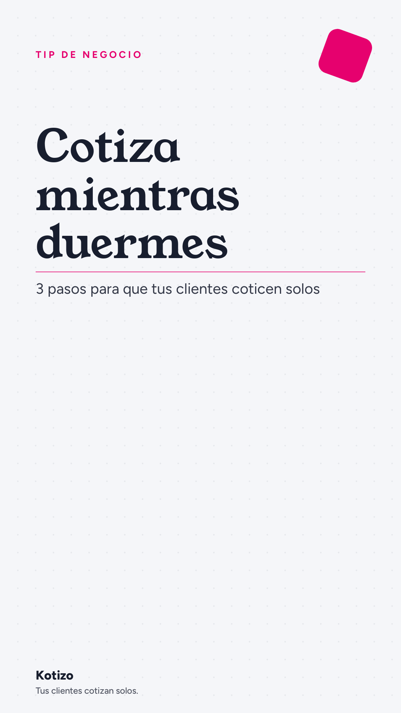

Tu negocio puede cotizar mientras duermes. Así:
Tu negocio puede cotizar mientras duermes. Así:
1. Nos das tus paquetes, precios y zonas.
2. Construimos tu cotizador con tu marca.
3. Tu cliente cotiza solo y te llega a WhatsApp.
Tú solo apruebas y cierras. ¿Quieres ver cómo quedaría el tuyo?